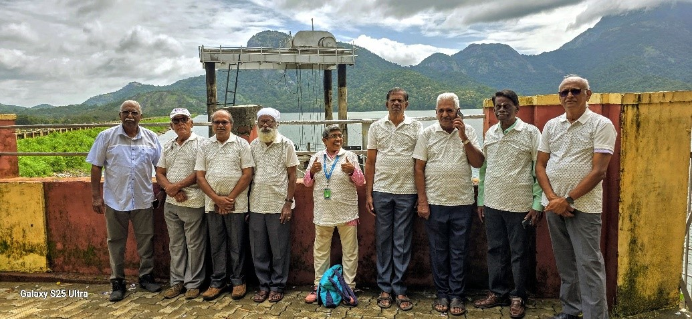
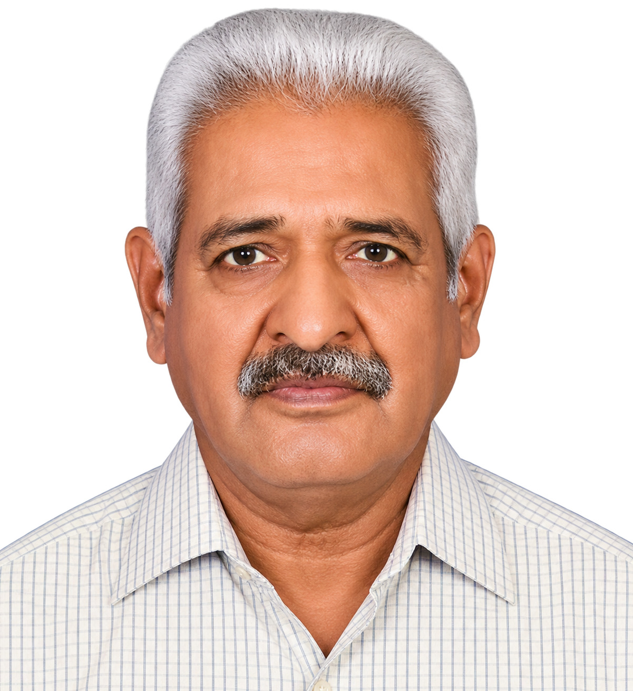

16–18 July 2025

Families, Friendship and Nature: Vet69 Palakkad Get-Together
Batch:
Madras Veterinary College 1969 Batch
Event:
Vet69 Batch Families' Get-Together
Date:
16–18 July 2025
Venue:
Palakkad
Members of the Madras Veterinary College 1969 Batch gathered with their families at Palakkad to renew cherished friendships and enjoy the serene beauty of the region's landscapes and reservoirs.
The reunion photograph includes batchmates and their family members. The portraits below identify the TTPA members featured in the group photograph.
TTPA Members in This Reunion Photograph
Dr. R. Kalaimathi

Dr. N. Rajendran